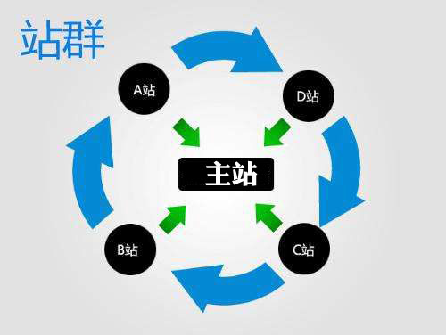
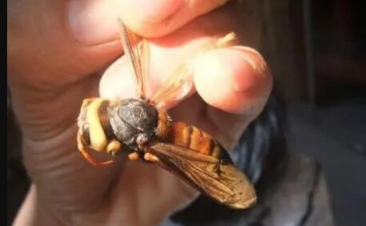

最近回老家不知道带什么礼物给家里老人，家人推荐带些西红柿，并称有一家种植西红柿的特好吃，酸甜可口，就是小时候吃的那种味道。
我听了后就去了他家大棚采摘，市面上卖2元一斤他家竟卖5元，可以自己采摘也可以快递送家。
据老板说他一年能赚50多万，才发现种植西红柿这么赚钱，这项目非常值得大家参考。
如上图，一个占地2亩的大棚，每个棚能种植4000棵西红柿，每季能收一万多斤左右，一年能种3季，一年一个大棚产量在4万斤左右，每斤卖5元，收入20多万。
老板家有三个大棚，大概一年收入60多万，去掉成本净赚50多万左右。
因为他们家的西红柿好吃，很多人为了口感而来，都是一桶一桶的买，老板也支持快递，只要你微信付钱后，直接邮寄到家。
下面是我跟老板的聊天：
Q:
1、老板，你家的西红柿跟别人家不一样哦,挺好吃的,怎么做到的？
我们家西红柿从不打农药和上化肥，肥料用的都是自家鸡粪和豆料。
西红柿苗都是网上购买的，山东那边发货，质量都有保障，一般果子长的非常饱满，品相好，再一个就是口感好。
说着，老板拿了一个西红柿让我尝尝，确实味道不错。
Q:
2、老板咱们这西红柿都怎么销售的，这么多人订购？
刚开始，我家西红柿是让亲戚朋友帮宣传，后来因为好吃，靠人人口碑传播客户多了起来。
你看今天的订购账本：

一到西红柿下来的时候，我就会在微信群里给大家发消息，让他们订购，基本上供不应求，很多人大早起就来采摘了，下午再来基本上就没有红的了。
好多北京人开车来这里购买，有的自己吃，有的当礼物送人。为了保证生意，我都限购，每人最多购买10斤，否则很多人买不上。
Q:
3、你这一个大棚投资多少钱？能收多少？
一个大棚占地在2亩地左右，一个棚一年可以种3次这样的西红柿，冬天的价格会贵一些，夏天的价格便宜一些。
投资的话，买苗、地膜、绳栓、浇水、肥料等，大概一年得2万左右，还不算人工成本。
收入的话，2亩的一个棚，一季度产量在一万五千斤，每斤5元，收入7万5，全年可种3季，收入20万以上。
我家有三个这样的大棚，年收入在50-60万左右。
Q:
4、老板，如果是新人可以做这个吗？
可以，但是你家的有地，如果租地得话，收益就不好说了，再加上人工费用，你赚不到多少。
你看我家还养着鸡鸭鹅，为了积攒肥料，我每年都买一万元以上的豆子。
这是老板家养的鸡鸭。

跟老板聊完之后，我顺便采访了几个来采摘的朋友，他们都在表达了为了口感，钱都不是事。
客户A：吃遍了很多西红柿，口感都不怎么好，就王姐这里好，找到小时候的口感了！
客户B：这西红柿酸甜可口，清爽宜人，我是慕名而来的。
客户C：市场上一两块一斤，这里卖5块钱，一两块的口感肯定不如这个。我买了是送我领导的。
客户D：反正是一分价格一分货，钱都不是事，难得能买到货真价实的西红柿。
看到老板的赚钱路子，给我的感觉是只要你的西红柿足够好吃，想赚钱，一点都不难。
如果你想做农业项目，但又找不到路子，我觉得这个真的可以做。